Generated by scripts/generate-clock-font.mjs. Departure Mono 1.500 by
Helena Zhang (SIL Open Font License 1.1, https://github.com/rektdeckard/departure-mono) is the
production clock font, locked at 99 px. It sets the main clock numerals, the colon and AM/PM only. The date,
event text, heart rate, battery and weather are Share Tech Mono 1.003. All
values are sample content.
The clock is drawn from the unmodified font outlines at whole multiples of
11 px, with one uniform scale, whole-pixel glyph origins and
anti-aliasing off. Tracking only moves glyphs closer together; the glyphs themselves are
untouched. AM/PM is 22 px. The clock area of the HUD
frame is 300 px wide.
Clock ink width in px (clearance to the frame per side)
Size
Tracking
10:08 PM
6:42 AM
12:59 PM
88 px
0 px
264 (+18)
208 (+46)
264 (+18)
88 px
-4 px
248 (+26)
196 (+52)
248 (+26)
88 px
-8 px
232 (+34)
184 (+58)
232 (+34)
99 px
0 px
297 (+1)
234 (+33)
297 (+1)
99 px
-4 px
281 (+9)
222 (+39)
281 (+9)
99 px
-9 px
261 (+19)
207 (+46)
261 (+19)
110 px
0 px
330 (-15)
260 (+20)
330 (-15)
110 px
-5 px
310 (-5)
245 (+27)
310 (-5)
110 px
-10 px
290 (+5)
230 (+35)
290 (+5)
88 px · 8× the 11 px design size
Each design pixel is a 8×8 block. Digits are 40 px wide and 64 px tall on a 56 px advance.
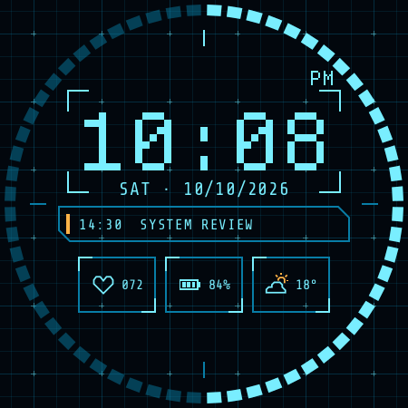
10:08 PM · default tracking ink 264 px wide · 18 px clear of the frame
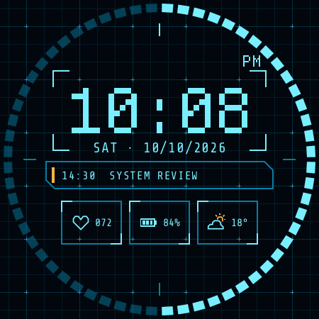
10:08 PM · tracking -4 px (-0.5 design px) ink 248 px wide · 26 px clear of the frame
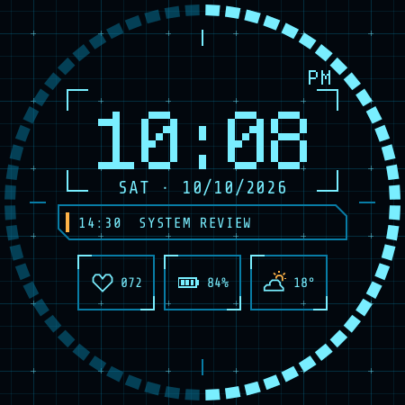
10:08 PM · tracking -8 px (-1 design px) ink 232 px wide · 34 px clear of the frame
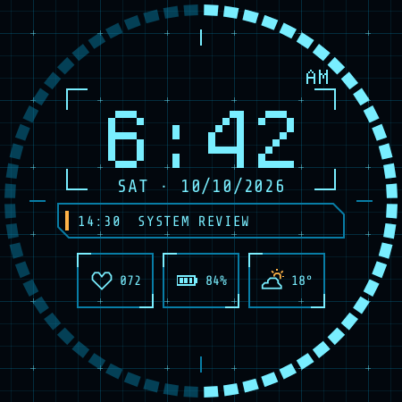
6:42 AM · default tracking ink 208 px wide · 46 px clear of the frame6:42 AM · tracking -4 px (-0.5 design px) ink 196 px wide · 52 px clear of the frame
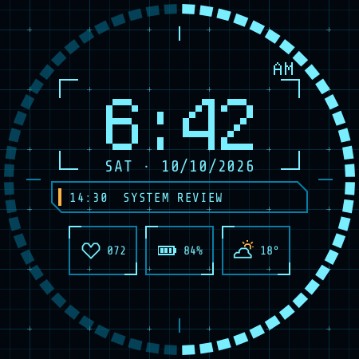
6:42 AM · tracking -8 px (-1 design px) ink 184 px wide · 58 px clear of the frame
12:59 PM · default tracking ink 264 px wide · 18 px clear of the frame
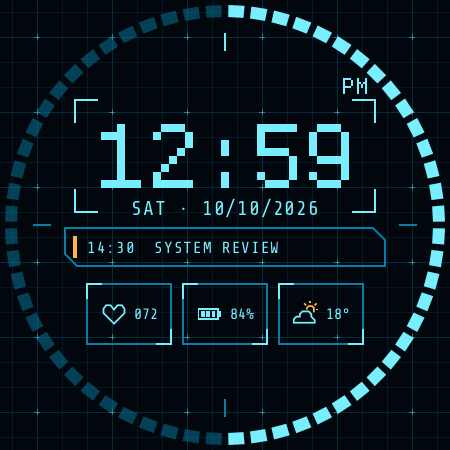
12:59 PM · tracking -4 px (-0.5 design px) ink 248 px wide · 26 px clear of the frame
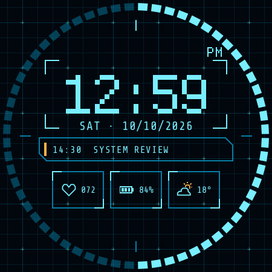
12:59 PM · tracking -8 px (-1 design px) ink 232 px wide · 34 px clear of the frame
99 px · 9× the 11 px design size
Each design pixel is a 9×9 block. Digits are 45 px wide and 72 px tall on a 63 px advance.
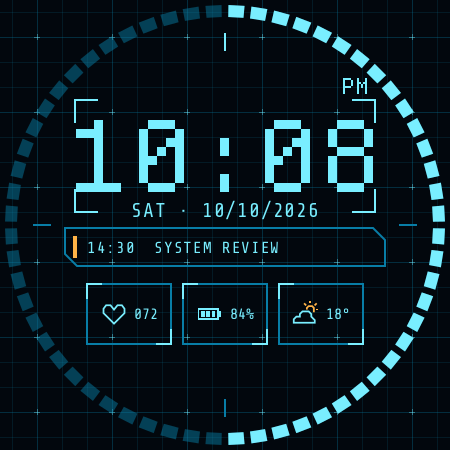
10:08 PM · default tracking ink 297 px wide · 1 px clear of the frame
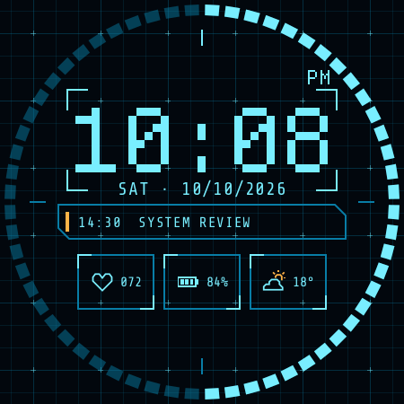
10:08 PM · tracking -4 px (-0.5 design px) ink 281 px wide · 9 px clear of the frame
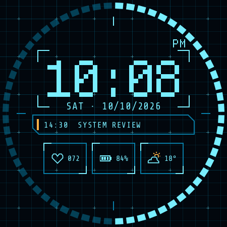
10:08 PM · tracking -9 px (-1 design px) ink 261 px wide · 19 px clear of the frame
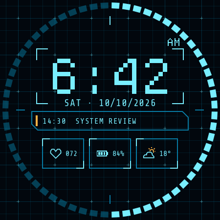
6:42 AM · default tracking ink 234 px wide · 33 px clear of the frame
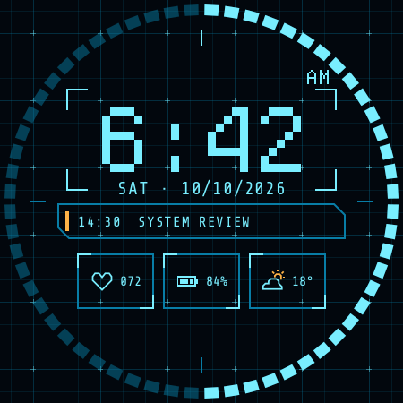
6:42 AM · tracking -4 px (-0.5 design px) ink 222 px wide · 39 px clear of the frame
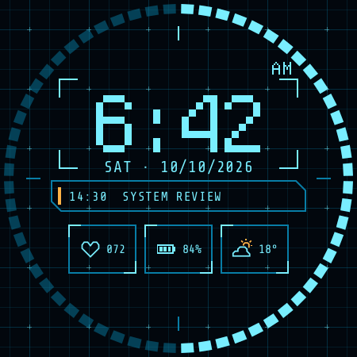
6:42 AM · tracking -9 px (-1 design px) ink 207 px wide · 46 px clear of the frame
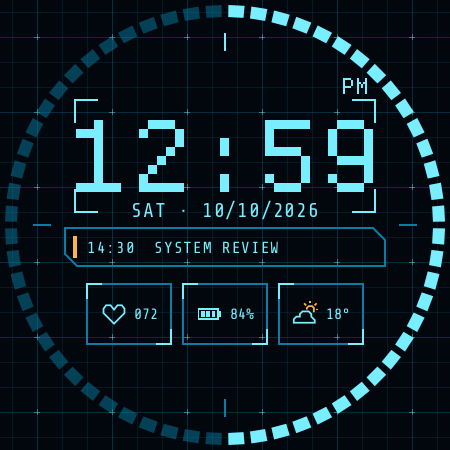
12:59 PM · default tracking ink 297 px wide · 1 px clear of the frame
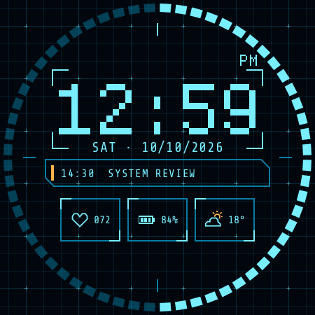
12:59 PM · tracking -4 px (-0.5 design px) ink 281 px wide · 9 px clear of the frame
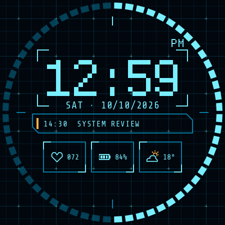
12:59 PM · tracking -9 px (-1 design px) ink 261 px wide · 19 px clear of the frame
110 px · 10× the 11 px design size
Each design pixel is a 10×10 block. Digits are 50 px wide and 80 px tall on a 70 px advance.
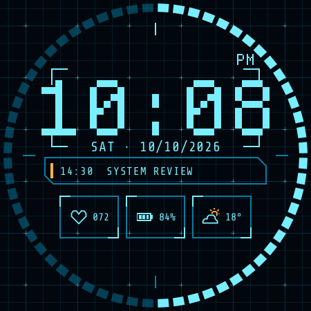
10:08 PM · default tracking ink 330 px wide · overruns the frame by 15 px a side
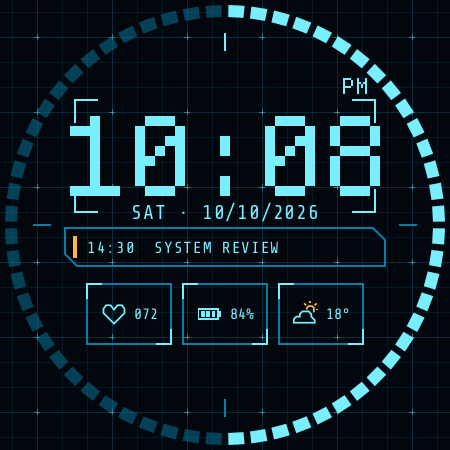
10:08 PM · tracking -5 px (-0.5 design px) ink 310 px wide · overruns the frame by 5 px a side
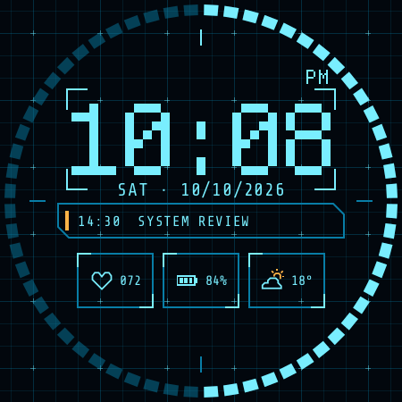
10:08 PM · tracking -10 px (-1 design px) ink 290 px wide · 5 px clear of the frame
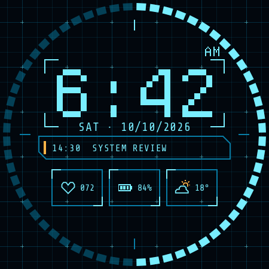
6:42 AM · default tracking ink 260 px wide · 20 px clear of the frame
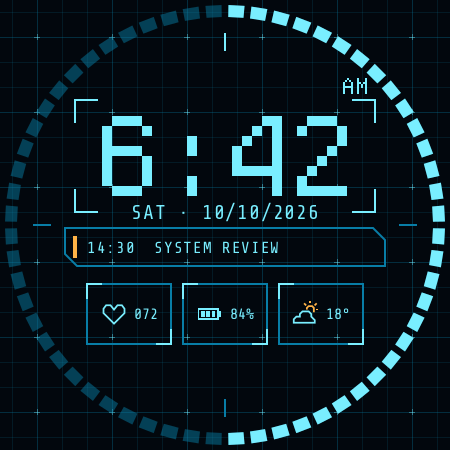
6:42 AM · tracking -5 px (-0.5 design px) ink 245 px wide · 27 px clear of the frame
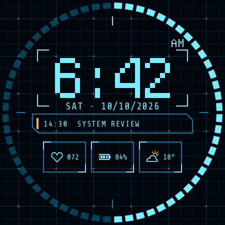
6:42 AM · tracking -10 px (-1 design px) ink 230 px wide · 35 px clear of the frame
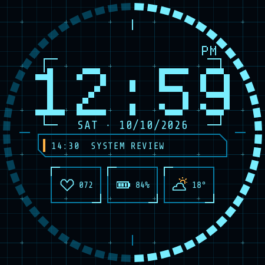
12:59 PM · default tracking ink 330 px wide · overruns the frame by 15 px a side
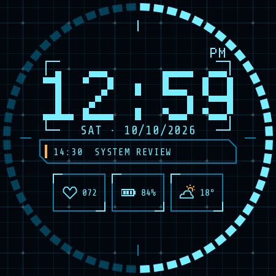
12:59 PM · tracking -5 px (-0.5 design px) ink 310 px wide · overruns the frame by 5 px a side
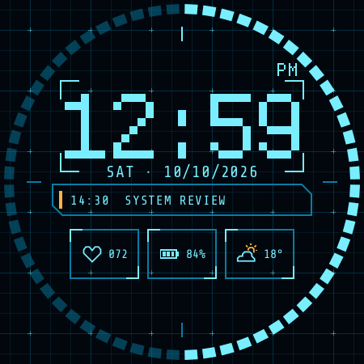
12:59 PM · tracking -10 px (-1 design px) ink 290 px wide · 5 px clear of the frame